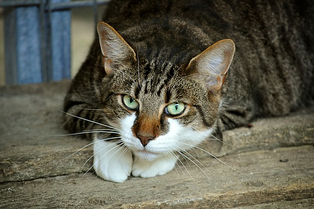
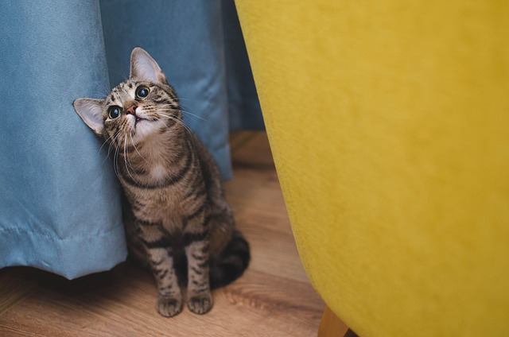
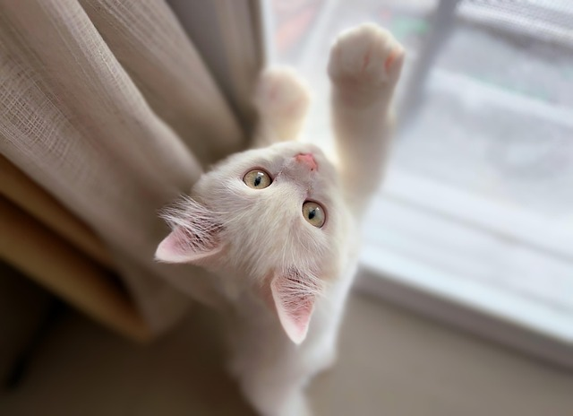
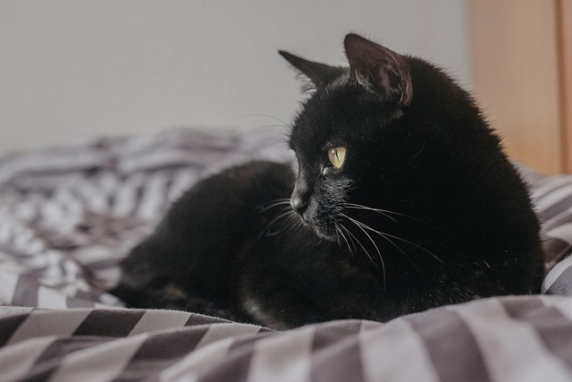
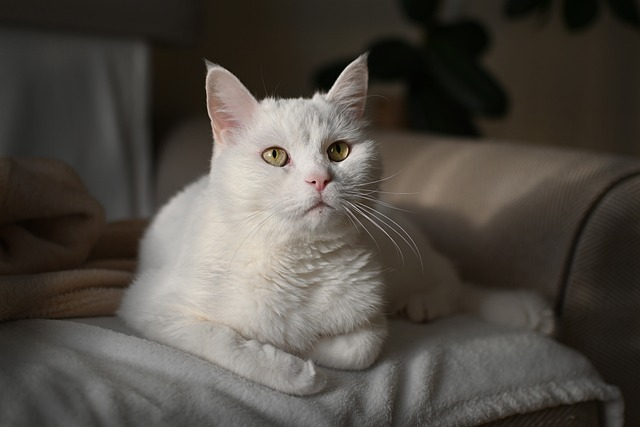

ISTANBUL / Sultanbeyli
26.03.2025
KONYA / Selçuklu
15.03.2025
ISTANBUL / Silivri
01.01.2023
ISTANBUL / Bagcilar
03.04.2025
CANAKKALE / Guzelyali
04.04.2025
- Cats don't just drink milk, milk can cause diarrhea in some cats.
- Cats do not like to live alone, they want attention and play.
- Not every meow is hunger, sometimes they just talk.
- The most suitable food for stray cats and dogs is kibble and boiled food.
- Raw bones, fatty foods, chocolate, etc., are harmful.
- Each animal should be given separate food. (Cat food should not be given to dogs!)
- In winter, leave water containers in a way that they won't freeze.
- In summer, place water containers in shaded areas.
- Collaborate with municipalities to create feeding stations.
- Love them, don't scare or harm them.